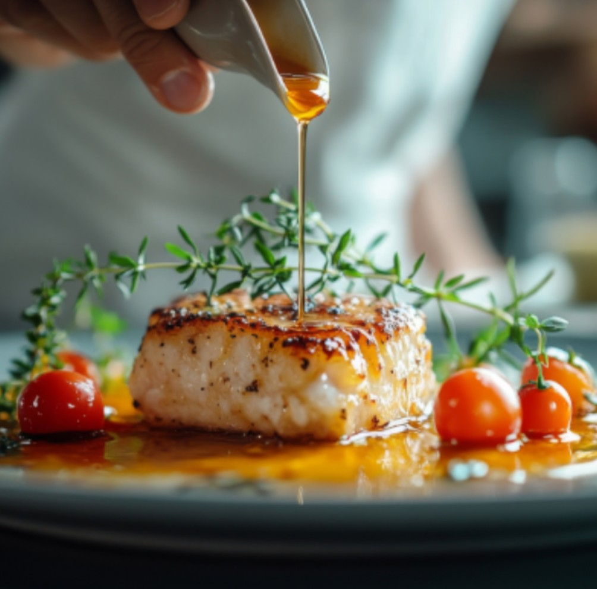
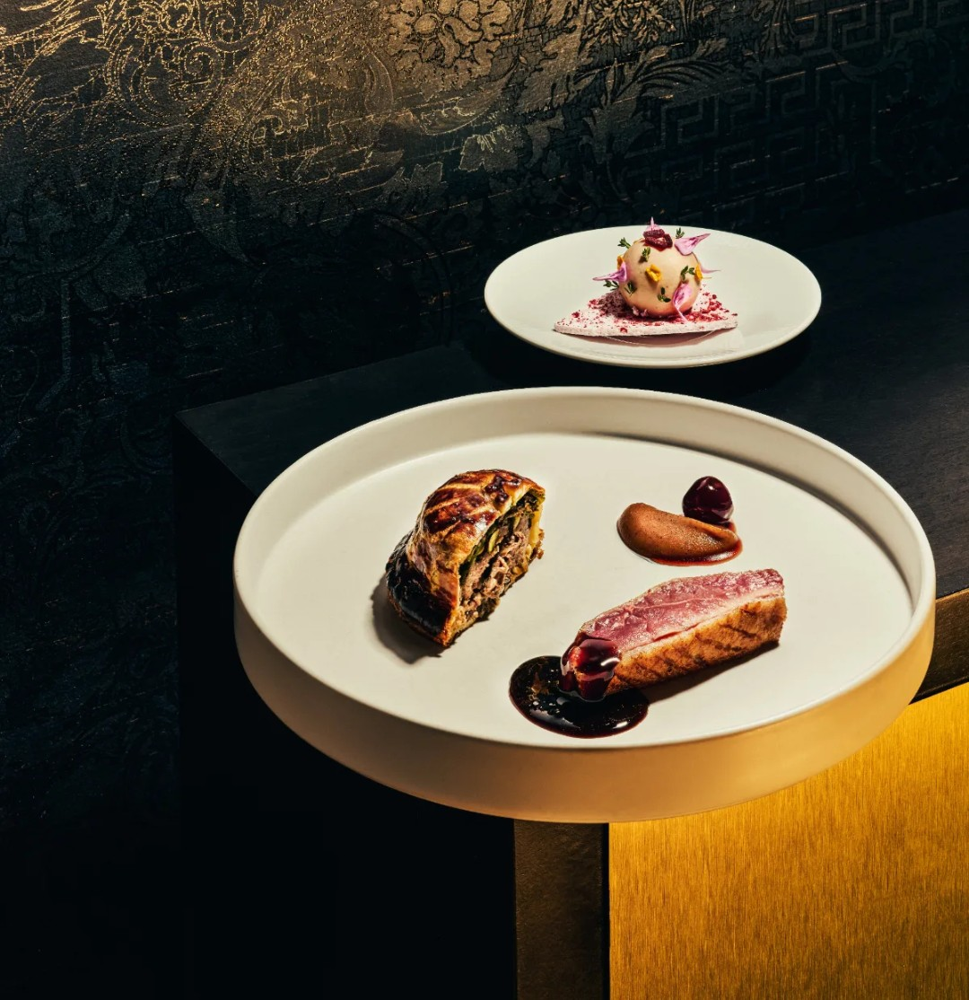
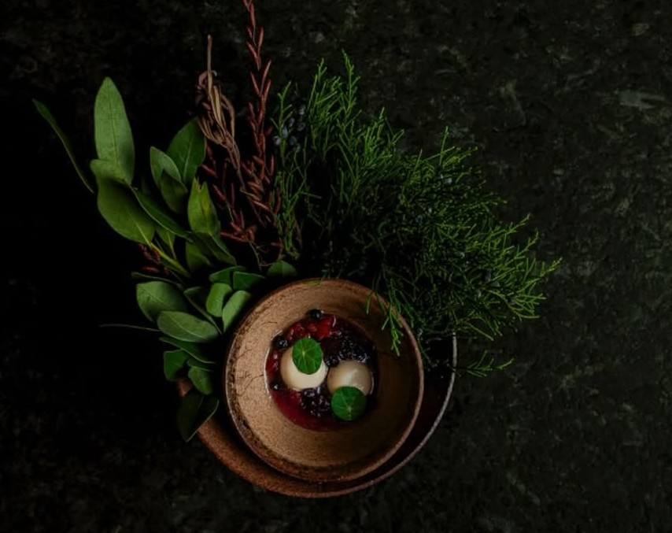
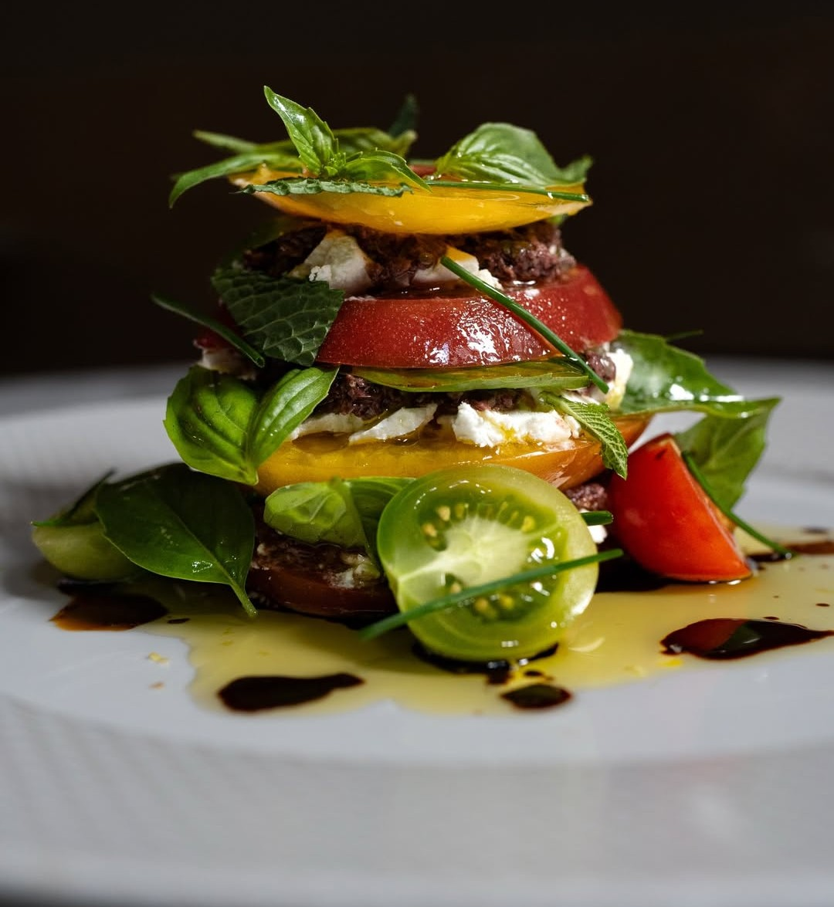

Some dinners are just dinner. And then there are the ones that matter — the anniversaries, the milestones, the long-overdue celebrations that deserve a room, a kitchen, and a team worthy of the moment. Ottawa has more of those restaurants than most people realize.
The city's finest tables have quietly been building toward something — a dining scene with genuine ambition, genuine craft, and genuine hospitality. What follows is a guide to the restaurants in Ottawa that understand what a special occasion actually requires: not just excellent food, but a complete experience, the kind that stays with you long after the meal is over.

Signatures
A historic mansion, a French kitchen, an unforgettable setting
There are restaurants that are special, and then there are restaurants that feel like events. Signatures is emphatically the latter. Housed in a historic Tudor Revival mansion built in 1877 and operated by the Le Cordon Bleu Ottawa Culinary Arts Institute, Signatures offers something genuinely rare in the capital — a dining experience where the setting is as extraordinary as what arrives on the plate.
The kitchen is guided by classically trained French chefs whose menus reflect a serious pedigree: contemporary French cuisine built on local seasonal ingredients, plated with the kind of precision and artistry that makes every course feel considered. Winding staircases, crystal chandeliers, and candlelit private dining rooms complete a picture that Ottawa's special occasion dining has no real equivalent to. Available Friday and Saturday evenings only, which only adds to its sense of occasion.

Aiana
Refined Canadian cuisine in Ottawa's most striking dining room
From the moment you step into Aiana's dining room — all dark lacquer, gold accents, and dramatic pendant lighting — it is clear that this is a restaurant that takes the full experience seriously. Located steps from Parliament Hill, Aiana has quickly established itself as one of Ottawa's most exciting fine dining destinations since opening, offering a nine-course tasting menu that blends classical discipline with a multicultural perspective on Canadian ingredients.
Chef Raghav Chaudhary's cooking is refined without being remote — there is genuine warmth in how the menu unfolds, course by course, each one a careful study in flavour and texture. For a special occasion that demands both culinary ambition and genuine hospitality, Aiana delivers both in equal measure. The room alone is worth the reservation.

Atelier
Ottawa's most ambitious kitchen — and its most unforgettable dinner
A dinner at Atelier is not like other dinners. There is no menu to choose from, no à la carte option, no safety net of familiarity. Chef Marc Lepine's modernist tasting experience — which changes constantly, guided by his own creative vision — asks guests to surrender entirely to the kitchen's intentions. For those willing to do so, what follows is unlike anything else in Ottawa, or indeed in Canada.
Lepine is a two-time Canadian Culinary Championship winner, and his cooking reflects a depth of technique and curiosity that has been refined over fifteen years of continuous innovation on Rochester Street. A special occasion at Atelier is not a celebration with a backdrop — the dinner itself is the event. It is the kind of meal that people describe years later, not because of what they ate, but because of how it made them feel.
Beckta
Ottawa's most beloved fine dining institution
For over two decades, Beckta has been the restaurant Ottawa turns to when the occasion demands the best. There is something reassuring about a restaurant that has earned its reputation quietly and consistently, without fanfare or reinvention — Beckta has been doing what it does exceptionally well for long enough that its place in the city's fine dining landscape feels permanent and essential.
The five-course tasting menu is refined and elegant, anchored by a wine program that remains one of the deepest and most thoughtfully curated in Ottawa. Service is warm, attentive, and unhurried — the kind that makes guests feel looked after without feeling watched. For milestone birthdays, anniversaries, or any occasion where only the very best will do, Beckta remains the default answer — and it has earned that position honestly.

Antheia
Sixteen seats, one kitchen, an experience unlike any other in the city
There are restaurants that accommodate special occasions, and then there is Antheia — a restaurant that is itself a special occasion. Chef Briana Kim's fermentation-driven chef's counter on Somerset Street seats just sixteen guests around an open kitchen, creating an intimacy that transforms a dinner into something closer to a private performance. Every course is the product of Kim's own fermentation programme, shaped by what the season offers and what her larder has been developing over weeks and months.
Kim is a Canadian Culinary Championship winner, and her cooking carries the kind of intellectual rigour and emotional depth that competition recognizes but cannot fully capture. An evening at Antheia is quiet, considered, and entirely singular. For a special occasion that demands something genuinely unlike anything else in Ottawa, this is the answer.

Riviera
Grand dining in Ottawa's most dramatic room
Some restaurants earn their reputation through the kitchen alone. Riviera earns it through everything — a soaring former bank on Sparks Street transformed into one of the most visually stunning dining rooms in Canada, a menu of polished French-influenced cooking built on Canadian ingredients, and a level of service that matches the grandeur of its surroundings.
Walking into Riviera for a special occasion feels different from walking into most restaurants. The scale of the room — the marble, the brass, the height of the ceilings — creates a sense of occasion before a single dish arrives. The kitchen backs it up with cooking that is confident and accomplished, making Riviera the obvious choice for celebrations that call for a room with presence, history, and something genuinely spectacular to look at.
Ottawa's finest restaurants understand that a special occasion is not just about what arrives on the plate — it is about the entire arc of an evening. These are the rooms, and the kitchens, that get that right.